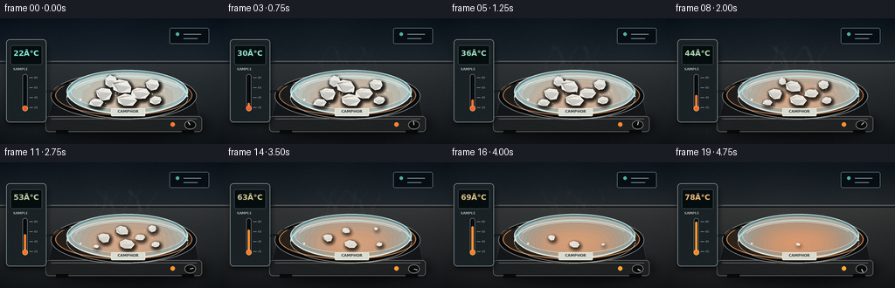
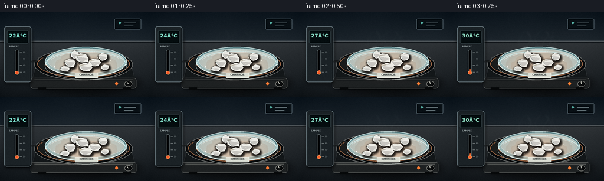

CODING AGENTS AS PIXEL WORLD MODELS
traex/GPT-5.6-Sol · phygen_119
点击播放 · 原生 RGB 像素
逐轮保存的候选
回放视频、检查图与代码变化。
每份候选均可单独播放。实际图片检查记录在下方工具轨迹中。
候选 01播放与检查图
点击播放 · 原生 RGB 像素

展开代码变化
--- 上一保存版本
+++ 本次保存版本
@@ -0,0 +1,354 @@
+"""Programmatically render a macro laboratory timelapse of camphor sublimating.
+
+The scene begins at room temperature. A controlled warming plate rises from
+22 C to 78 C while irregular, white camphor crystals steadily recede directly
+to vapor (there is deliberately no liquid phase).
+"""
+
+from pathlib import Path
+import math
+
+import numpy as np
+from PIL import Image, ImageDraw, ImageFilter, ImageFont
+
+import artifact_io
+
+
+W, H, N = 256, 144, 20
+SS = 4
+SW, SH = W * SS, H * SS
+ROOT = Path(__file__).resolve().parent
+
+
+def sc(v):
+ return int(round(v * SS))
+
+
+def box(x0, y0, x1, y1):
+ return tuple(sc(v) for v in (x0, y0, x1, y1))
+
+
+def pts(values):
+ return [(sc(x), sc(y)) for x, y in values]
+
+
+FONT_PATH = "/usr/share/fonts/truetype/dejavu/DejaVuSans.ttf"
+FONT_BOLD_PATH = "/usr/share/fonts/truetype/dejavu/DejaVuSans-Bold.ttf"
+
+
+def font(size, bold=False):
+ path = FONT_BOLD_PATH if bold else FONT_PATH
+ return ImageFont.truetype(path, sc(size))
+
+
+def alpha_over(base, overlay):
+ return Image.alpha_composite(base, overlay)
+
+
+def background(t):
+ """Dark, uncluttered lab wall and a slate laboratory bench."""
+ yy, xx = np.mgrid[0:SH, 0:SW]
+ xn, yn = xx / SW, yy / SH
+ heat = t * 0.8
+
+ # Blue-charcoal wall above the bench, gently warmed over the shot.
+ wall_top = np.array([15 + 5 * heat, 24 + 3 * heat, 32], dtype=float)
+ wall_low = np.array([38 + 12 * heat, 47 + 6 * heat, 54], dtype=float)
+ wall_mix = np.clip(yn / .55, 0, 1)[..., None]
+ arr = wall_top * (1 - wall_mix) + wall_low * wall_mix
+
+ # Slate bench, separated by a clean horizon at y=49.
+ bench_mix = np.clip((yn - .34) / .66, 0, 1)[..., None]
+ bench_top = np.array([48 + 10 * heat, 53 + 5 * heat, 57], dtype=float)
+ bench_low = np.array([20 + 7 * heat, 25 + 3 * heat, 29], dtype=float)
+ bench = bench_top * (1 - bench_mix) + bench_low * bench_mix
+ mask = (yn >= 49 / H)[..., None]
+ arr = np.where(mask, bench, arr)
+
+ # Central vignette and low-frequency photographic texture.
+ dist = ((xn - .53) / .75) ** 2 + ((yn - .50) / .92) ** 2
+ arr -= np.clip(dist, 0, 1.5)[..., None] * 10
+ texture = (np.sin(xx * .016) + np.sin(yy * .024 + xx * .004)) * .65
+ arr += texture[..., None]
+ return Image.fromarray(np.uint8(np.clip(arr, 0, 255)), "RGB").convert("RGBA")
+
+
+def draw_lab_environment(im, t):
+ d = ImageDraw.Draw(im, "RGBA")
+
+ # Defocused wall details provide scale but do not compete with the sample.
+ d.line(pts([(0, 49), (256, 49)]), fill=(103, 111, 116, 60), width=sc(.7))
+ d.line(pts([(0, 51), (256, 51)]), fill=(5, 10, 14, 80), width=sc(1.0))
+ d.rounded_rectangle(box(194, 11, 239, 29), radius=sc(2), fill=(8, 15, 20, 80),
+ outline=(133, 153, 164, 22), width=sc(.5))
+ d.ellipse(box(201, 16, 205, 20), fill=(85, 173, 162, 70))
+ d.line(pts([(210, 18), (230, 18)]), fill=(123, 140, 146, 27), width=sc(1))
+ d.line(pts([(210, 23), (226, 23)]), fill=(123, 140, 146, 18), width=sc(1))
+
+ # Soft cast shadow under the hot plate.
+ sh = Image.new("RGBA", im.size, (0, 0, 0, 0))
+ sd = ImageDraw.Draw(sh, "RGBA")
+ sd.ellipse(box(53, 105, 238, 139), fill=(0, 0, 0, 170))
+ sh = sh.filter(ImageFilter.GaussianBlur(sc(6)))
+ im = alpha_over(im, sh)
+
+ # Hot-plate body and brushed metal front.
+ d = ImageDraw.Draw(im, "RGBA")
+ d.polygon(pts([(63, 83), (221, 83), (231, 125), (52, 125)]),
+ fill=(19, 23, 25, 255), outline=(84, 89, 91, 210))
+ d.rounded_rectangle(box(52, 112, 231, 130), radius=sc(4), fill=(30, 33, 34, 255),
+ outline=(102, 105, 103, 180), width=sc(.7))
+ d.line(pts([(58, 115), (225, 115)]), fill=(147, 149, 143, 35), width=sc(.6))
+ d.rectangle(box(64, 128, 78, 132), fill=(7, 9, 10, 255))
+ d.rectangle(box(208, 128, 222, 132), fill=(7, 9, 10, 255))
+
+ # Ceramic top: the inner ring warms subtly from graphite to dull orange.
+ d.ellipse(box(58, 62, 225, 116), fill=(6, 9, 11, 255), outline=(118, 121, 119, 180), width=sc(1.0))
+ d.ellipse(box(63, 65, 220, 111), fill=(24 + int(18*t), 27 + int(7*t), 27, 255),
+ outline=(160 + int(45*t), 106 + int(25*t), 73, 75 + int(65*t)), width=sc(1.2))
+ d.ellipse(box(77, 69, 207, 106), outline=(221, 100, 45, int(18 + 76*t)), width=sc(1.0))
+
+ # Power lamp and control knob on front panel.
+ lamp = (255, 123 + int(50*t), 53, 120 + int(125*t))
+ d.ellipse(box(195, 119, 200, 124), fill=lamp)
+ d.ellipse(box(211, 117, 224, 127), fill=(9, 11, 12, 255), outline=(145, 146, 140, 150), width=sc(.8))
+ ang = math.radians(-125 + 190*t)
+ d.line(pts([(217.5, 122), (217.5 + 4*math.cos(ang), 122 + 4*math.sin(ang))]),
+ fill=(220, 220, 209, 210), width=sc(1))
+ return im
+
+
+def draw_controller(im, t):
+ """Natural in-scene evidence that the temperature rises from room temp."""
+ sh = Image.new("RGBA", im.size, (0, 0, 0, 0))
+ sd = ImageDraw.Draw(sh)
+ sd.rounded_rectangle(box(8, 29, 54, 122), radius=sc(4), fill=(0, 0, 0, 160))
+ sh = sh.filter(ImageFilter.GaussianBlur(sc(3)))
+ im = alpha_over(im, sh)
+ d = ImageDraw.Draw(im, "RGBA")
+ d.rounded_rectangle(box(7, 24, 53, 119), radius=sc(4), fill=(27, 34, 38, 250),
+ outline=(128, 146, 153, 155), width=sc(.8))
+ d.rounded_rectangle(box(12, 31, 48, 53), radius=sc(2), fill=(5, 13, 15, 255),
+ outline=(71, 91, 94, 180), width=sc(.6))
+ temp = 22 + 56 * (t ** 1.06)
+ color = (128 + int(110*t), 226 - int(49*t), 207 - int(95*t), 255)
+ label = f"{temp:02.0f}°C"
+ f = font(8.5, True)
+ tw = d.textbbox((0, 0), label, font=f)[2]
+ d.text((sc(30) - tw/2, sc(35)), label, font=f, fill=color,
+ stroke_width=sc(.18), stroke_fill=(17, 51, 50, 180))
+ d.text((sc(15), sc(56)), "SAMPLE", font=font(3.7, True), fill=(167, 179, 181, 190))
+
+ # Vertical thermometer bar with ticks and a rising luminous column.
+ d.rounded_rectangle(box(25.8, 64, 31.3, 106), radius=sc(2.6), fill=(4, 8, 10, 245),
+ outline=(135, 149, 151, 130), width=sc(.5))
+ mercury_top = 102 - 34*t
+ d.rounded_rectangle(box(27.3, mercury_top, 29.8, 103), radius=sc(1.2),
+ fill=(255, 104 + int(52*t), 53, 245))
+ d.ellipse(box(25.4, 100, 31.7, 106.3), fill=(247, 91 + int(45*t), 44, 255),
+ outline=(255, 203, 124, 130), width=sc(.5))
+ for i, val in enumerate((20, 40, 60, 80)):
+ y = 102 - i * 11.4
+ d.line(pts([(33.5, y), (37.5, y)]), fill=(176, 185, 184, 145), width=sc(.55))
+ d.text((sc(39), sc(y-2)), str(val), font=font(3.2), fill=(155, 166, 167, 145))
+
+ # Probe cable leads naturally into the sample dish.
+ cable = [(53, 84), (62, 83), (69, 77), (81, 75), (92, 78)]
+ d.line(pts(cable), fill=(5, 7, 8, 230), width=sc(2.2), joint="curve")
+ d.line(pts(cable), fill=(108, 116, 117, 130), width=sc(.55), joint="curve")
+ d.line(pts([(91, 77.5), (117, 84)]), fill=(167, 172, 168, 215), width=sc(1.1))
+ d.ellipse(box(114, 82, 118, 86), fill=(177, 181, 175, 230))
+ return im
+
+
+def vapor_layer(t):
+ """Faint backlit vapor and heat shimmer, strongest mid-sublimation."""
+ vap = Image.new("RGBA", (SW, SH), (0, 0, 0, 0))
+ vd = ImageDraw.Draw(vap, "RGBA")
+ strength = (math.sin(math.pi * min(1, t)) ** .7) * (0.75 + .25*t)
+ if strength <= 0.01:
+ return vap
+
+ # Curved wisps rise and spread; their phase progresses between frames.
+ for j in range(7):
+ base_x = 117 + j * 9 + 2.3 * math.sin(j * 2.1)
+ phase = j * 1.77 + t * 5.1
+ curve = []
+ for q in range(31):
+ u = q / 30
+ y = 79 - 48*u
+ x = base_x + math.sin(u * 7.2 + phase) * (1.2 + 5.1*u) + (j-3)*u*.8
+ curve.append((x, y))
+ a = int((21 + 10 * math.sin(j + 1)**2) * strength)
+ vd.line(pts(curve), fill=(214, 237, 236, a), width=sc(2.2), joint="curve")
+ vd.line(pts(curve), fill=(238, 250, 246, int(a*.62)), width=sc(.55), joint="curve")
+
+ vap = vap.filter(ImageFilter.GaussianBlur(sc(1.6)))
+ # A few soft ascending motes suggest timelapse movement without smoke.
+ vd = ImageDraw.Draw(vap, "RGBA")
+ for j in range(9):
+ cyc = (t * 1.35 + j * .119) % 1
+ x = 111 + (j * 17.3) % 69 + math.sin(t*7 + j)*3
+ y = 82 - cyc * 45
+ r = .35 + .45*(1-cyc)
+ vd.ellipse(box(x-r, y-r, x+r, y+r), fill=(239, 249, 243, int(75*strength*(1-cyc))))
+ return vap
+
+
+def draw_petri_dish(im, t):
+ """Glass petri dish with layered refraction and a readable sample label."""
+ d = ImageDraw.Draw(im, "RGBA")
+
+ # Glass footprint and refracted interior.
+ d.ellipse(box(76, 59, 215, 109), fill=(167, 204, 207, 13),
+ outline=(199, 224, 224, 130), width=sc(1.1))
+ d.ellipse(box(81, 63, 211, 104), fill=(205, 226, 224, 9),
+ outline=(226, 240, 237, 86), width=sc(.6))
+ d.arc(box(77, 60, 214, 110), start=8, end=174, fill=(239, 249, 245, 155), width=sc(.9))
+ d.arc(box(77, 60, 214, 110), start=188, end=351, fill=(80, 122, 128, 120), width=sc(1.2))
+ d.arc(box(85, 65, 207, 100), start=196, end=343, fill=(226, 245, 242, 45), width=sc(.6))
+
+ # Front glass wall is visible as a second rim below the sample plane.
+ d.arc(box(76, 66, 215, 115), start=2, end=178, fill=(227, 244, 241, 35), width=sc(.6))
+ d.arc(box(76, 66, 215, 115), start=179, end=359, fill=(172, 211, 212, 140), width=sc(1.2))
+ d.line(pts([(77, 84), (77, 90)]), fill=(197, 228, 228, 75), width=sc(.7))
+ d.line(pts([(214, 83), (214, 90)]), fill=(197, 228, 228, 75), width=sc(.7))
+
+ # Small frosted identification label attached to the front rim.
+ d.rounded_rectangle(box(127, 103, 166, 112), radius=sc(1), fill=(220, 225, 216, 205),
+ outline=(255, 255, 247, 155), width=sc(.45))
+ f = font(4.3, True)
+ text = "CAMPHOR"
+ tw = d.textbbox((0, 0), text, font=f)[2]
+ d.text((sc(146.5)-tw/2, sc(104.1)), text, font=f, fill=(43, 53, 54, 220))
+ return im
+
+
+# Stable hand-shaped crystal positions and forms. Different end times make the
+# pile recede organically rather than shrinking as a single graphic object.
+CRYSTALS = [
+ (119, 86, 10.5, 7.6, 0.96, 12),
+ (140, 78, 11.5, 8.4, 0.82, 31),
+ (160, 86, 10.2, 7.3, 0.72, 49),
+ (145, 94, 12.0, 7.2, 1.03, 68),
+ (110, 96, 8.3, 5.4, 0.64, 87),
+ (174, 76, 8.4, 6.3, 0.77, 104),
+ (127, 72, 7.8, 6.8, 0.55, 123),
+ (178, 94, 6.9, 4.7, 0.88, 152),
+]
+
+
+def crystal_polygon(cx, cy, rx, ry, seed, scale):
+ rng = np.random.default_rng(seed)
+ n = 7
+ angles = np.linspace(0, math.tau, n, endpoint=False) + rng.uniform(-.13, .13, n)
+ radial = rng.uniform(.83, 1.13, n)
+ return [(cx + math.cos(a)*rx*radial[i]*scale,
+ cy + math.sin(a)*ry*radial[i]*scale) for i, a in enumerate(angles)]
+
+
+def draw_crystals(im, t):
+ # Shadows remain dry-edged and contract with each solidânever a liquid pool.
+ shadows = Image.new("RGBA", im.size, (0, 0, 0, 0))
+ sd = ImageDraw.Draw(shadows, "RGBA")
+ states = []
+ for cx, cy, rx, ry, end, seed in CRYSTALS:
+ u = min(1.0, t / end)
+ remaining = max(0.0, 1 - u ** 1.42)
+ if remaining < .012:
+ states.append((cx, cy, rx, ry, seed, 0.0, remaining))
+ continue
+ scale = remaining ** .48
+ states.append((cx, cy, rx, ry, seed, scale, remaining))
+ poly = crystal_polygon(cx, cy, rx, ry, seed, scale)
+ sd.polygon(pts([(x+1.3, y+2.0) for x, y in poly]), fill=(0, 0, 0, int(105*scale)))
+ shadows = shadows.filter(ImageFilter.GaussianBlur(sc(2.1)))
+ im = alpha_over(im, shadows)
+
+ layer = Image.new("RGBA", im.size, (0, 0, 0, 0))
+ d = ImageDraw.Draw(layer, "RGBA")
+ for cx, cy, rx, ry, seed, scale, remaining in sorted(states, key=lambda s: s[1]):
+ if scale <= 0:
+ continue
+ poly = crystal_polygon(cx, cy, rx, ry, seed, scale)
+ # Warm reflected lower face, milky body, then icy facets.
+ base = (225 + int(16*remaining), 224 + int(18*remaining), 213 + int(24*remaining),
+ int(218 + 30*remaining))
+ d.polygon(pts(poly), fill=base, outline=(255, 255, 248, 235), width=sc(.55))
+
+ # Deterministic faceted crystal structure.
+ rng = np.random.default_rng(seed + 700)
+ center = (cx - .8*rx*scale, cy - .34*ry*scale)
+ vertices = [poly[i] for i in (0, 2, 4, 6)]
+ colors = [(255,255,250,150), (184,207,207,105), (248,241,218,95), (255,255,255,115)]
+ for k in range(3):
+ tri = [center, vertices[k], vertices[k+1]]
+ d.polygon(pts(tri), fill=colors[k])
+ d.line(pts([center, vertices[k+1]]), fill=(255,255,252,105), width=sc(.35))
+ # Sharp specular shard on the coolest upper-left face.
+ d.line(pts([(cx-rx*.52*scale, cy-ry*.32*scale),
+ (cx-rx*.08*scale, cy-ry*.72*scale),
+ (cx+rx*.30*scale, cy-ry*.50*scale)]),
+ fill=(255, 255, 255, 185), width=sc(.55), joint="curve")
+
+ # Fine residual crystals diminish earlier than the principal pieces.
+ rng = np.random.default_rng(991)
+ grain_strength = max(0, 1 - (t/.69)**1.5)
+ if grain_strength > .03:
+ for _ in range(24):
+ a = rng.uniform(0, math.tau)
+ rad = math.sqrt(rng.random())
+ x = 145 + math.cos(a)*48*rad
+ y = 87 + math.sin(a)*13*rad
+ r = rng.uniform(.25, .7) * (.35 + .65*grain_strength)
+ d.ellipse(box(x-r, y-r*.65, x+r, y+r*.65),
+ fill=(245, 246, 235, int(110 + 115*grain_strength)))
+ return alpha_over(im, layer)
+
+
+def final_glass_highlights(im):
+ d = ImageDraw.Draw(im, "RGBA")
+ # Highlights in front of the solids make them convincingly sit inside glass.
+ d.arc(box(76, 66, 215, 115), start=184, end=351, fill=(214, 239, 238, 125), width=sc(.9))
+ d.arc(box(82, 68, 209, 108), start=199, end=334, fill=(255, 255, 250, 52), width=sc(.55))
+ d.ellipse(box(91, 92, 93, 94), fill=(255, 255, 255, 120))
+ return im
+
+
+def render_frame(index):
+ t = index / (N - 1)
+ im = background(t)
+ im = draw_lab_environment(im, t)
+ im = draw_controller(im, t)
+ # Vapor belongs behind the sample and glass front but over the rear rim.
+ im = alpha_over(im, vapor_layer(t))
+ im = draw_petri_dish(im, t)
+ im = draw_crystals(im, t)
+ im = final_glass_highlights(im)
+
+ # A gentle warm practical light grows with plate temperature.
+ glow = Image.new("RGBA", im.size, (0, 0, 0, 0))
+ gd = ImageDraw.Draw(glow)
+ gd.ellipse(box(82, 65, 210, 119), fill=(255, 121, 45, int(5 + 10*t)))
+ glow = glow.filter(ImageFilter.GaussianBlur(sc(17)))
+ im = alpha_over(im, glow)
+
+ rgb = im.convert("RGB").resize((W, H), Image.Resampling.LANCZOS)
+ arr = np.asarray(rgb).astype(np.int16)
+ # Fine, mostly static sensor grain prevents flat gradients while avoiding
+ # distracting frame-to-frame scintillation.
+ rng = np.random.default_rng(2048)
+ grain = rng.normal(0, .7, (H, W, 1))
+ temporal = np.random.default_rng(3000 + index).normal(0, .18, (H, W, 1))
+ arr = np.clip(arr + grain + temporal, 0, 255).astype(np.uint8)
+ return arr
+
+
+def main():
+ frames = np.stack([render_frame(i) for i in range(N)])
+ artifact_io.save(frames, ROOT)
+ print(f"saved {frames.shape[0]} RGB frames at {frames.shape[2]}x{frames.shape[1]}")
+
+
+if __name__ == "__main__":
+ main()
候选 02播放与检查图
点击播放 · 原生 RGB 像素

展开代码变化
--- 上一保存版本
+++ 本次保存版本
@@ -70,7 +70,7 @@
arr -= np.clip(dist, 0, 1.5)[..., None] * 10
texture = (np.sin(xx * .016) + np.sin(yy * .024 + xx * .004)) * .65
arr += texture[..., None]
- return Image.fromarray(np.uint8(np.clip(arr, 0, 255)), "RGB").convert("RGBA")
+ return Image.fromarray(np.uint8(np.clip(arr, 0, 255))).convert("RGBA")
def draw_lab_environment(im, t):
候选 03播放与检查图
点击播放 · 原生 RGB 像素

展开代码变化
--- 上一保存版本
+++ 本次保存版本
@@ -132,7 +132,7 @@
outline=(71, 91, 94, 180), width=sc(.6))
temp = 22 + 56 * (t ** 1.06)
color = (128 + int(110*t), 226 - int(49*t), 207 - int(95*t), 255)
- label = f"{temp:02.0f}°C"
+ label = f"{temp:02.0f}\N{DEGREE SIGN}C"
f = font(8.5, True)
tw = d.textbbox((0, 0), label, font=f)[2]
d.text((sc(30) - tw/2, sc(35)), label, font=f, fill=color,
候选 04播放与检查图
可观测工具轨迹
实际执行的命令与返回图片。
命令 1exit 0
/bin/bash -lc 'cat GENERATION_RULES.md'
命令 2exit 0
/bin/bash -lc "cat task_spec.json && printf '\\n--- PROMPT ---\\n' && cat prompt.txt"
命令 3exit 0
/bin/bash -lc "find . -maxdepth 2 -type f -printf '%p\\n' | sort | sed -n '1,200p' && printf '\\nTOOLS\\n' && command -v ffmpeg || true && command -v python3 || true && python3 - <<'PY' mods=['cv2','numpy','PIL','imageio','matplotlib','cairo'] for m in mods: try: x=__import__(m); print(m,'OK',getattr(x,'__version__','')) except Exception as e: print(m,'NO',e) PY"
命令 4exit 0
/bin/bash -lc "sed -n '1,260p' artifact_io.py"
命令 5exit 0
/bin/bash -lc 'python3 generate.py'
命令 6exit 0
/bin/bash -lc "grep -n \"Image.fromarray\\|label =\" generate.py | cat -v"
命令 7exit 0
/bin/bash -lc "python3 - <<'PY'
p='generate.py'
s=open(p,encoding='utf-8').read()
s=s.replace('Image.fromarray(np.uint8(np.clip(arr, 0, 255)), \"RGB\")','Image.fromarray(np.uint8(np.clip(arr, 0, 255)))')
line=[x for x in s.splitlines() if 'label = f' in x][0]
print(repr(line))
s=s.replace(line, ' label = f\"{temp:02.0f}°C\"')
open(p,'w',encoding='utf-8').write(s)
PY
python3 generate.py
python3 - <<'PY'
from pathlib import Path
import json, numpy as np
from PIL import Image
root=Path('.')
spec=json.loads((root/'task_spec.json').read_text())
data=np.load(root/'pixels.npz')['pixels']
files=sorted((root/'frames').glob('*.png'))
assert data.shape==(spec['height'],spec['width'],spec['frames'])
assert len(files)==spec['frames']==20
arr=np.stack([np.asarray(Image.open(f)) for f in files])
assert arr.shape==(20,144,256,3) and arr.dtype==np.uint8
assert all(Image.open(f).mode=='RGB' for f in files)
mad=np.mean(np.abs(np.diff(arr.astype(np.int16),axis=0)),axis=(1,2,3))
print('frames:',arr.shape,arr.dtype,'npz:',data.shape,data.dtype)
print('adjacent MAD:',np.round(mad,3).tolist())
print('first-last MAD:',round(float(np.mean(np.abs(arr[-1].astype(float)-arr[0]))),3))
print('artifacts:',[(p.name,p.stat().st_size) for p in [root/'pixels.npz',root/'inspection.png',root/'transition_check.png',root/'index.html']])
PY"命令 8exit 0
/bin/bash -lc "python3 - <<'PY'
p='generate.py'
s=open(p,encoding='utf-8').read()
line=[x for x in s.splitlines() if 'label = f' in x][0]
s=s.replace(line, r' label = f\"{temp:02.0f}\\N{DEGREE SIGN}C\"')
# Raw replacement wrote escaped quotes; normalize those while retaining the named Unicode escape.
s=s.replace(r'label = f\\\"{temp:02.0f}\\N{DEGREE SIGN}C\\\"', r'label = f\"{temp:02.0f}\\N{DEGREE SIGN}C\"')
open(p,'w',encoding='utf-8').write(s)
PY
grep -n \"label =\" generate.py
python3 generate.py
python3 - <<'PY'
from pathlib import Path
import numpy as np
from PIL import Image
root=Path('.')
frames=sorted((root/'frames').glob('*.png'))
a=np.stack([np.asarray(Image.open(x)) for x in frames])
assert a.shape==(20,144,256,3) and a.dtype==np.uint8
assert np.load('pixels.npz')['pixels'].shape==(144,256,20)
for f in ('index.html','inspection.png','transition_check.png','pixels.npz','generate.py'):
assert (root/f).exists() and (root/f).stat().st_size>0
# Monotonic readout progression and clearly visible physical evolution are built from t.
print('validation passed; RGB frames:', a.shape, 'range:', int(a.min()), int(a.max()))
print('first/final changed pixels:', int(np.any(a[0] "'!= a[-1], axis=2).sum()))
PY'保存候选 4 份；完成命令 8 次；可验证图片返回 0 张。原始 API 响应与完整日志保留在本地。